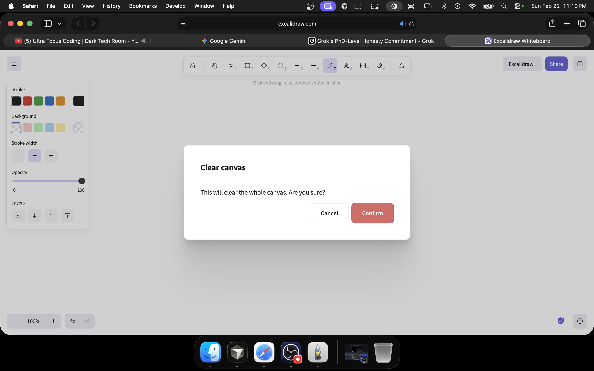
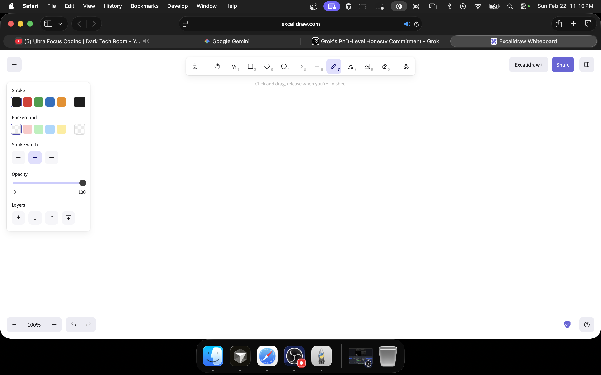
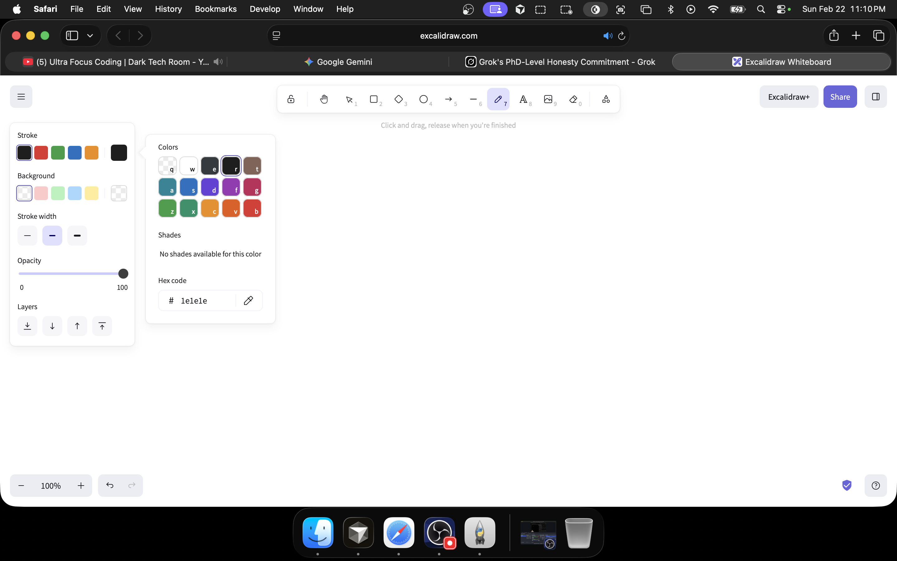
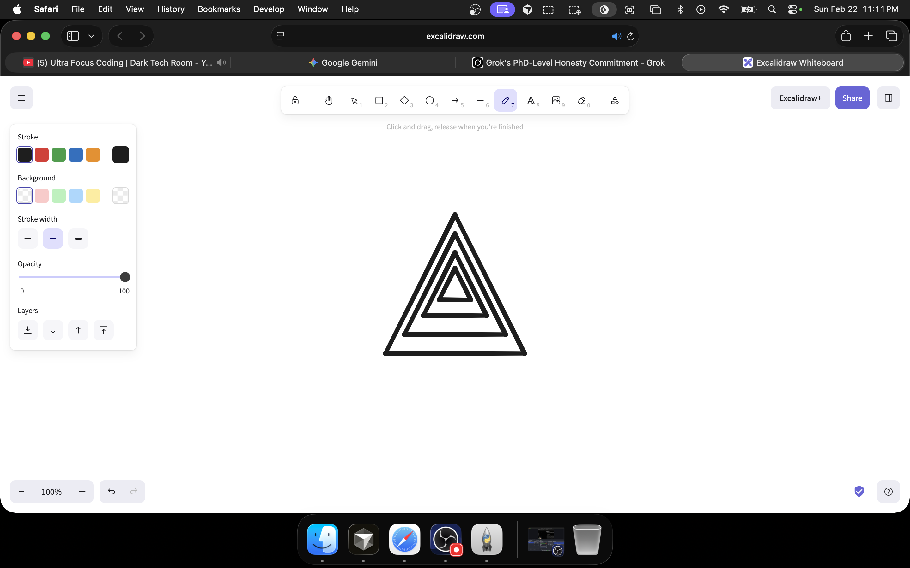

Concentric Triangles (Clean) - Evidence report
Generated 2026-02-22 23:11:00. Each step has a screenshot so you can see with your own eyes that it passed.
Step 1: Erase all drawings (Cmd+Backspace)
PASS

Step 2: Confirm clear canvas dialog (Enter)
PASS

Step 3: Pause for dialog to close and canvas to clear
PASS

Step 4: Verify canvas is empty (state-based oracle)
PASS

Step 5: Pause after clear so canvas is ready
PASS

Step 6: Re-capture and get exact canvas center for drawing in middle
PASS

Step 7: Brief pause before selecting pen
PASS

Step 8: Select pen tool (p)
PASS

Step 9: Open stroke color picker (S)
PASS
Step 10: Set stroke to black
PASS

Step 11: Pause before drawing
PASS

Step 12: Draw 4 concentric triangles at center (release at each corner)
PASS
